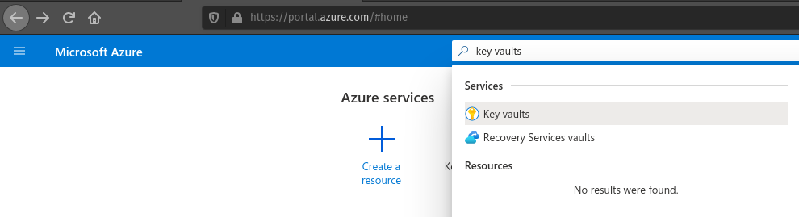
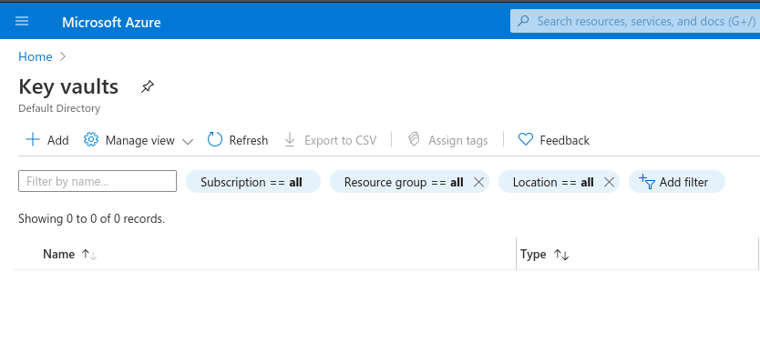
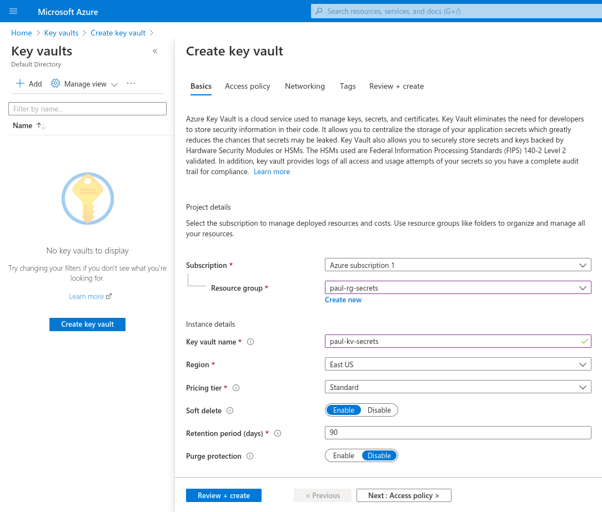
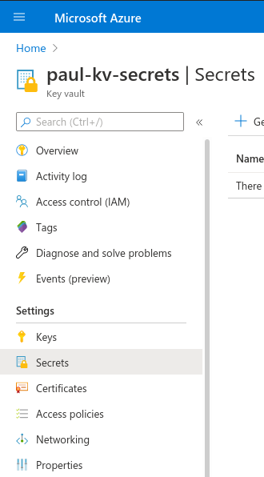
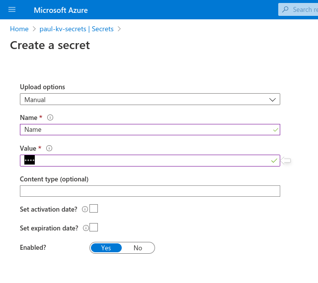

Modern web applications rely on access to one or more data sources. Most applications will need to make a request to at least one database to manage business data. To do this, the application needs credentials to access the database. Such credentials can be written as a database connection string.
Example
Consider the following fictionalized database connection string used to connect a .NET web application to a MySQL database:
server=172.28.162.111;port=3306;database=car_db;user=car_user;password=7p*RTY5g8i#WB@F8
This string contains:
That’s all the information anyone needs to gain access to your database server!
A database connection string is a type of secret, a privileged piece of information that our application needs to operate.
Secrets can be used as the key to protect access to sensitive data. Sensitive data includes proprietary knowledge or Personally Identifying Information (PII). Sensitive data is usually secured within a data backing service. The data backing service credentials (i.e. the database connection string) should be guarded to ensure only individuals with authorization can access this sensitive data.
Here are some examples of PII:
Examples of Proprietary data:
Note
A secret is a subset of sensitive data. Proprietary knowledge and PII may be part of the underlying data an application uses, but they are not necessary for an application to function.
Secrets are data kept separate from the source code of the application. In other words, a secret is information that is never made publicly available.
Examples of secrets:
There are a few things we must do to ensure our sensitive data is not exposed to the public.
Warning
This and the next two articles will talk about various strategies and tooling to keep sensitive data protected, but they are not exhaustive.
To ensure we don’t accidentally expose sensitive data we must be careful with the files we track using Git. If we have a file that contains sensitive data, we need to make sure the file is never staged and committed to a Git repository. If sensitive data is tracked, committed, and pushed to a remote repository then other people may be able to view it.
Manually determining which file has sensitive data and making sure it isn’t added to the local Git repository would be a pain. Fortunately for us, Git has a built in feature that allows us to easily track the files we don’t want to include in a repository.
This feature is managed by the aptly name .gitignore file. Files and directories added to the .gitignore file will simply be skipped over when Git checks your files and directories for changes.
Let’s make a new temporary directory, initialize it as a local git repository and run the git status command.
> New-Item -ItemType "directory" -Name temp_directory
> Set-Location ./temp_directory/
> New-Item -ItemType "file" -Name new-file.txt -Value "hello world"
> git init
> git status
On branch master
No commits yet
Untracked files:
(use "git add <file>..." to include in what will be committed)
new-file.txt
nothing added to commit but untracked files present (use "git add" to track)
After running these commands, the git status output shows the untracked files. In this case, our untracked file is new-file.txt.
Let’s try adding a .gitignore file with the entry of new-file.txt and the run the git status again.
> Set-Location ./temp_directory/
> New-Item -ItemType "file" -Name .gitignore -Value "new-file.txt"
> git status
On branch master
No commits yet
Untracked files:
(use "git add <file>..." to include in what will be committed)
.gitignore
nothing added to commit but untracked files present (use "git add" to track)
Our local Git repository has detected a different change. It no longer detects new-file.txt. In this case, Git simply skipped over new-file.txt when scanning our project directory since it matched an entry in the .gitignore file.
Our local Git repository has detected that a new file is currently untracked: .gitignore. We want to stage and commit this file because we can use it to document which files are not being tracked by Git.
> git add .gitignore
> git commit -m "added .gitignore to protect sensitive data"
Tip
When writing code, you should always consider the data that is exposed in your source code. A best practice is to add a file (or a directory of files) to .gitignore that you know will contain sensitive data. By adding it before creating the file you can ensure secrets won’t ever have a chance to be committed. If you determine a file does have sensitive data in it then you should add it to the .gitignore file right away.
We have only scratched the surface of .gitignore. It is also used to ignore entire directories or derived code like build artifacts. It also understands wildcard syntax along with many other features. These aspects go beyond the scope of this course, but you can learn more by reading the Git documentation.
A best practice for handling secrets is to use external configuration files. In the same vein as keeping sensitive data out of our source code, external configuration goes a step further by keeping our configuration files outside of our project file tree.
You have already encountered internal project configuration files. The CodingEventsAPI we have been working with has an appsettings.json file which contains various configuration properties. However, when dealing with secrets we want to distance this data even further from our project code. As a reminder, secrets are data required for applications to function, but the secrets need to be kept external to our project.
External configuration is the process of keeping configuration data outside of the source code of a project and loading the configuration values into the project at runtime. This keeps the secrets separate from the project completely.
Using external configuration files has two major benefits:
Note
Separating the configurations from the rest of the source code has even more benefits, but these are the two ways in which we will explore external configurations throughout this course.
We will discuss application environments in the next article, but before then let’s discuss how we can manage secrets in .NET and Azure.
There are many different applications that handle secrets management, and while they have slightly different implementations they are loosely based on the same basic principles. Generally speaking, we refer to these services as secrets managers.
We have used two different environments for running our apps: locally on our personal machines and remotely via Azure. For local development environments we will use the dotnet user-secrets tool to manage our secrets. In remote environments we will use Azure Key Vault.
dotnet user-secrets¶dotnet user-secrets is an added module of the dotnet CLI. Like all dotnet commands, you can use the --help option to learn more. This tool is a local secrets manager.
When using dotnet user-secrets, dotnet creates a secrets store directory on your machine. When you initialize a secrets store in your project, your project configuration file (.csproj) will automatically be updated with its ID.
We can see this in action by creating a new temporary .NET project and printing out the .csproj file:
> dotnet new console -n example-dotnet-user-secret
> Set-Location ./example-dotnet-user-secret/
> Get-Content ./example-dotnet-user-secret.csproj
<Project Sdk="Microsoft.NET.Sdk">
<PropertyGroup>
<OutputType>Exe</OutputType>
<TargetFramework>netcoreapp3.1</TargetFramework>
<RootNamespace>example_dotnet_user_secret</RootNamespace>
</PropertyGroup>
</Project>
This is the .csproj file for a standard .NET project. Let’s initialize a new secret store for this project using dotnet user-secrets init.
> Set-Location ./example-dotnet-user-secret/
> dotnet user-secrets init --id example-secret-store-id
Set UserSecretsId to 'example-secret-store-id' for MSBuild project
'/home/<username>/example-dotnet-user-secret/example-dotnet-user-secret.csproj'.
This command did two things for us:
.csproj file to let our project know the ID of the secret store.We can view the changed .csproj file with:
> Set-Location ./example-dotnet-user-secret/
> Get-Content ./example-dotnet-user-secret.csproj
<?xml version="1.0" encoding="utf-8"?>
<Project Sdk="Microsoft.NET.Sdk">
<PropertyGroup>
<OutputType>Exe</OutputType>
<TargetFramework>netcoreapp3.1</TargetFramework>
<RootNamespace>example_dotnet_user_secret</RootNamespace>
<UserSecretsId>example-secret-store-id</UserSecretsId>
</PropertyGroup>
</Project>
Now that our .NET project has an associated secret store we can add as many secrets as we want. They will be stored externally from our project source and loaded at runtime.
Let’s add a new secret:
> Set-Location ./example-dotnet-user-secret
> dotnet user-secrets set secret_name secret_value
Successfully saved secret_name = secret_value to the secret store.
Setting our first secret associated with this project and secret store will have created a new secrets.json file. It will look something like this:
{
"secret_name": "secret_value"
}
You can safely discard this application since we will no longer be using it. In the following walkthrough we will get hands-on practice with both local user-secrets and the Azure Key Vault.
In our remote production environment we will be using Azure Key Vault to manage our secrets. The Azure Key Vault is a remote secrets manager. It behaves like user-secrets but is managed externally from your machine.
The following are the general steps of setting up a Key Vault. In the following walkthrough we will cover these steps in greater detail.
Starting in the Azure portal you will need to search for the Key Vault blade.
Then from the home page you will need to click Add.
Then fill out the form to create the Key Vault.
This creates a new Key Vault with the specified parameters. By selecting this Key Vault you can add new secrets.
Then by clicking Add again you fill out the form to create a new secret.
We then see our newly created secret in Key Vault. (Note: The secret in this example has key "Name" and value "", so while it may not be obvious at first glance, it is indeed in the table of secrets.)